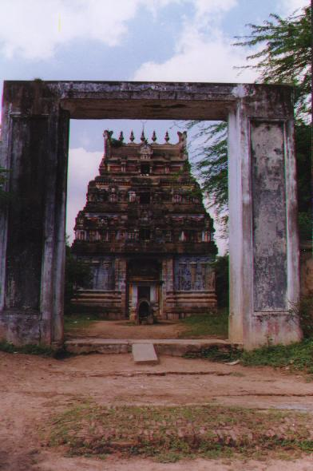
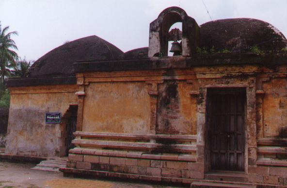
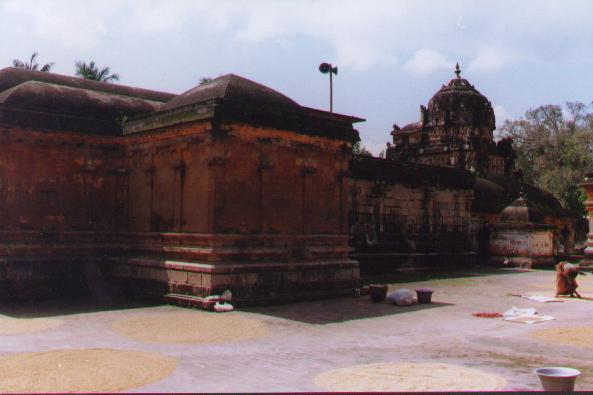
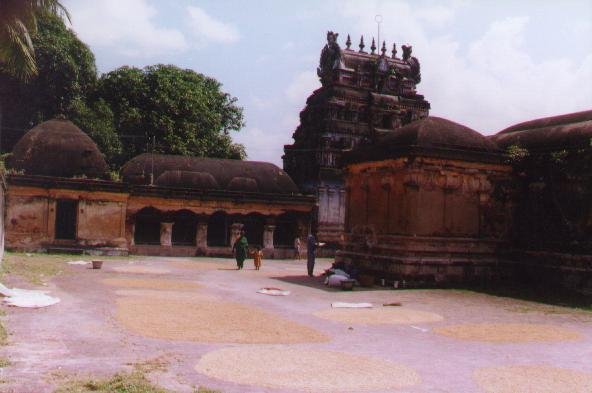
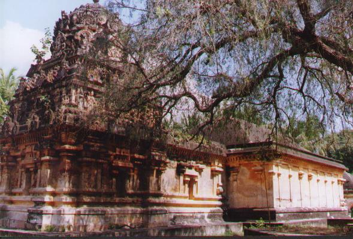
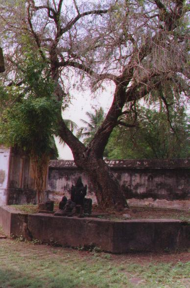

pāmpuram
- Identifier: KT059
- Modern Name (NIC):
- Modern Name (M.I.): tiruppāmpuram
- Modern Name (Govt Press): tiruppāmpuram
- Modern Name: tirup pāmpuram
- Modern District & Taluk: tiruvārūr DT (naṉṉilam TK or kuṭavācal TK)
- Old administrative location: Tanjore DT (Nunnilam TK)
- Nearby town: cūrikkāyūr
- Visit date: 12 january 2000 (difficult to access)
- GPS reading: 10 deg. 57.90' & 79 deg. 36.17'
- Railway station:
- Longit. 79 deg. 36'; Latit. 10 deg. 58' [KT059]
- C.D.Maclean-3: entry: , p. , col. , lines
[ , lat. deg. ', long. deg. ']
- Location: according to PK: Cōḻa Nāṭu, Kāvēri Teṉ Kari (KT059)
- Name inside hymns:
- Name inside PK:
- Rank inside third volume of PIFI: 201
- Rank inside Civastala Mañcari: 200
- Rank on PY576 map:
- Total number of patikam-s: 1
- Campantar: 1 patikam
12 pictures taken on 2000 january 12th (by G.Ravindran)











- Patikam 1_41